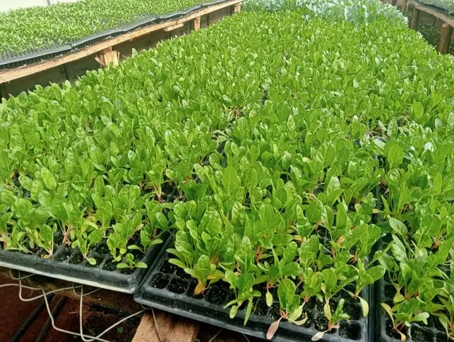

Vegetable Guide
Growing Premium Spinach with Confidence
Spinach is one of the most rewarding crops for both kitchen gardens and commercial plots. Strong seedlings help you start with better root systems and more uniform growth.
Key Growing Tips
- Use fertile, well-drained soil with a near-neutral pH.
- Keep moisture consistent, especially after transplanting.
- Harvest outer leaves first for a longer production cycle.
- Provide light midday protection in very hot conditions.